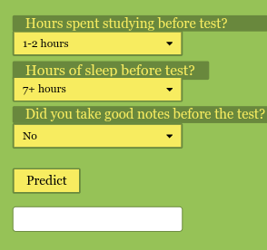

What This Project Was
I built an app where you can put in various different types of information about your pre test habits and then it will predict what you got on the test. It analyzses different student data.
Screenshot or Visual

Project Link
The Problem or Question
The problem I am trying to solve is students who may not know what they need to change about what they do before tests in order to get a better grade.
The Data, Features, or Labels Involved
The data that was used were various questions like Hours spent studying, Hours of sleep before test and wether or not you took good notes before the test.
What the AI System Was Supposed to Do
It is trying to predict what people need to do or change in order to get better grades on their tests.
One Limitation, Bias Risk, or Ethical Concern
One concern I had was that it is not 100% accurate so people cnanot solely use this app to change the way they want to study or prepare for a test.
One Way a Human Decision Mattered
Humans need to decide what their study habits are and what they do in order for the ai to work properly.